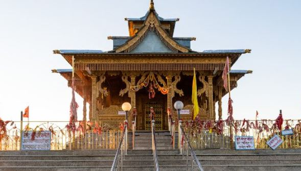

Temple situated on Hatu peak is one of the main temples in Narkanda region of Shimla, Himachal Pradesh. Hatu, being a common tourist place and must go place for bikers, has an important significance in this region. It’s one of the highest motorable peaks in this region, although disconnects from rest of the world in winters. .
Hatu is a ancient Temple located in dense forest.It ‘s enclosed by lush greenery,Pine and spruce trees on the hill top.With serene view of Peak . It is highest peak of the area at 11000 feet .Hatu is ultimate destination for tourist and devotees.Fascinating and astonish landscape makes people to visit again and again .Hatu is a small beautiful wooden temple .People comes with their wishes to temple ,it is a belive that asking with true heart will definitly get fulfilled something . According to local belief the famous hatu mata temple is the temple of ‘Mandodari’ wife of ‘Ravna’. People come in great number on the first Sunday of ‘Jeth’ (name of hindi month) to pay ritual here. Goat sacrifice is still in practice near the temple.hat it’s where the Pandavas brothers prepared and cooked their food during their agyaat vaas.There is a legend, which stems from the Bhagwad Gita, that the Pandavas brothers spent part of their time in exile on the top of this Himalayan mountain. Having gambled away their fortune and wife, they were cast out from their clan for thirteen years. They also had to remain invisible to people for a period of one year. Should that condition be broken they had to spend a further thirteen years in exile (apparently they succeeded). There is a legend that Pandavas spent part of their life during there exile here on Hatu peak. There are two giant stones, shaped like a chullah called “Bheem Chullah” stands as an evidence in the vicinity. 
6GR2+W3Q, Hatu, Narkand, Kumarsain, Himachal Pradesh 171213